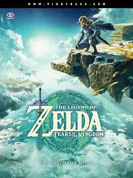
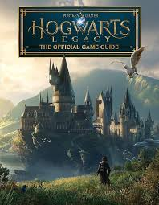
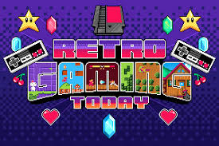

🎮 Bienvenido al Universo GAMEX: Tu Portal Gamer en Canarias
Descubre los últimos lanzamientos, los clásicos inmortales y el mejor equipo para tu setup. En GAMEX, no
solo vendemos videojuegos; somos el punto de encuentro para la pasión gamer que une a todas las Islas
Canarias.
Nos esforzamos cada día para ofrecerte contenido actualizado, reseñas exclusivas y una comunidad donde
puedas compartir tus opiniones y experiencias. Además, contamos con un blog que cubre toda la actualidad
del mundo del gaming, desde lanzamientos hasta consejos expertos.
Con nuestra plataforma, tú eres parte activa de la evolución gamer en Canarias, participando en debates,
compartiendo estrategias o simplemente disfrutando de una comunidad vibrante y apasionada. GAMEX está
aquí para acompañarte en cada partida.
Te invitamos a visitar nuestras redes sociales, donde publicamos promociones especiales, concursos y
noticias que no encontrarás en ningún otro lugar. Mantente informado y conecta con otros gamers como tú.
Nuestra misión es transformar cada experiencia de juego en un momento inolvidable. Por eso, además de
productos, te ofrecemos contenido, eventos y asistencia técnica que realmente marcan la diferencia.
📜 Nuestra Historia: Una Pasión Desde 2024
Fundada en 2024, GAMEX nació de la visión de crear un espacio dedicado exclusivamente a la comunidad
gamer de Canarias. Desde nuestros humildes comienzos, hemos crecido para convertirnos en el
referente regional para videojuegos, consolas y accesorios, siempre priorizando la calidad y la
experiencia del cliente.
🛡️ Valores y Compromiso GAMEX
Nuestra filosofía se basa en tres pilares fundamentales que nos diferencian en el sector:
- Comunidad y Cercanía: Priorizamos la relación con nuestros clientes. Queremos
que te sientas como en casa, brindándote una atención personalizada y un espacio donde compartir
tu afición.
- Calidad y Confianza: Solo ofrecemos productos de la más alta calidad y
trabajamos con proveedores oficiales. Nuestra promesa es que cada compra en GAMEX es una
inversión segura en tu entretenimiento.
- Innovación Constante: Estamos siempre a la vanguardia, no solo con los últimos
juegos y consolas, sino también en tendencias de hardware, eSports y nuevas formas de
interactuar con la comunidad.
🕹️ Oferta de Productos y Servicios: La Experiencia Completa
Nuestra selección está cuidadosamente curada para satisfacer desde el jugador ocasional hasta el
profesional más exigente:
- Videojuegos (Físico y Digital): Catálogo masivo que incluye preventas,
ediciones coleccionista, títulos AAA multiplataforma (PS5, Xbox Series X, Switch, PC) e incluso
códigos digitales para tus plataformas favoritas.
- Consolas de Última Generación: Disponibilidad garantizada de las plataformas
más solicitadas y sus modelos especiales, asegurando que siempre tengas acceso a la tecnología
más puntera.
- Accesorios Premium: Una gama de accesorios de marcas líderes: mandos élite,
auriculares gaming con sonido envolvente, sillas ergonómicas, y cables de alto rendimiento para
minimizar el input lag.
👥 Nuestra Comunidad Gamer: El Corazón de GAMEX
En GAMEX, no somos solo una tienda; somos una familia de apasionados por los videojuegos. Nuestra
comunidad se extiende por todas las Islas Canarias, uniendo a jugadores de todas las edades y
niveles.
Organizamos encuentros mensuales donde compartimos experiencias, descubrimos nuevos títulos y
formamos alianzas estratégicas en juegos multijugador. Creemos que el gaming es más que
entretenimiento: es una forma de conectar, aprender y crecer juntos.
Únete a nuestro foro en línea, donde discutimos estrategias, compartimos guías y organizamos eventos
virtuales. Además, tenemos un programa de fidelidad que recompensa a nuestros clientes más leales
con descuentos exclusivos, acceso anticipado a preventas y entradas gratuitas a nuestros torneos.
¡Tu pasión por los juegos te espera aquí!
📈 Tendencias en Gaming: Lo Último y Lo Próximo
El mundo del gaming evoluciona constantemente, y en GAMEX estamos siempre un paso adelante.
Actualmente, vemos un auge en los juegos de realidad virtual y aumentada, con títulos como
Half-Life: Alyx y Pokémon GO liderando la carga. La nube gaming está democratizando el acceso a
experiencias de alta calidad, permitiendo jugar AAA en dispositivos modestos. Además, el metaverso
gaming está emergiendo, con mundos virtuales donde los jugadores pueden socializar, trabajar y
crear.
Mantente informado con nuestras newsletters semanales, donde analizamos las últimas tendencias,
reseñamos nuevos lanzamientos y te damos consejos para optimizar tu setup. Desde esports
profesionales hasta juegos indie innovadores, GAMEX te mantiene al día con lo que importa en el
universo gamer.
💬 Testimonios de Clientes: Lo Que Dicen Nuestros Gamers
No nos creas solo a nosotros; escucha a quienes han vivido la experiencia GAMEX:
"GAMEX transformó mi setup gaming. Sus consejos me ayudaron a elegir la consola perfecta, y
el servicio técnico me salvó cuando mi mando falló. ¡Son los mejores!" - Juan Pérez, Tenerife
"Como madre de un adolescente gamer, aprecio cómo GAMEX fomenta la comunidad sana. Los
eventos son divertidos y seguros para toda la familia." - María López, Gran Canaria
"He comprado aquí desde que abrieron. Su selección de juegos retro es incomparable, y
siempre me tratan como un amigo." - Carlos Rodríguez, Lanzarote
Estos testimonios reflejan nuestro compromiso con la satisfacción del cliente. ¡Únete a miles de
gamers felices y comparte tu historia con nosotros!
🚀 Futuros Planes: Lo Que Viene en GAMEX
El futuro de GAMEX es brillante y lleno de innovación. Estamos expandiendo nuestra presencia en línea
con una app móvil que permitirá compras rápidas, seguimiento de pedidos en tiempo real y acceso a
contenido exclusivo. Planeamos abrir sucursales en otras islas, llevando la experiencia GAMEX a más
comunidades gamer.
Además, estamos desarrollando un centro de formación en gaming, donde impartiremos cursos sobre
diseño de juegos, streaming profesional y esports. Nuestro objetivo es no solo vender productos,
sino empoderar a la próxima generación de creadores y jugadores. ¡Mantente atento, porque GAMEX está
a punto de subir de nivel!
Nuestros Juegos
The Legend of Zelda: Tears of the Kingdom

Platform: Nintendo Switch
Price: $69.99
Description: The sequel to "Breath of the Wild" offers an expansive world full
of adventures, puzzles, and a deep narrative following Link on his mission to save Hyrule.
Baldur's Gate 3

Platform: PC, PS5
Price: $59.99
Description: A Baldur's Gate RPG based on the
famous Dungeons & Dragons series, where player choices affect
the story and character development.
Call of Duty: Modern Warfare II

Platform: PC, PS4, PS5, Xbox One, Xbox Series X/S
Price: $69.99
Description: The latest installment in the popular shooter franchise, with an
exciting campaign mode and addictive multiplayer.
Starfield

Platform: PC, Xbox Series X/S
Price: $69.99
Description: A space RPG from Bethesda that allows players to explore a vast
universe, customize ships, and engage in interstellar combat.
Spider-Man 2

Platform: PS5
Price: $69.99
Description: The sequel to the acclaimed action game, where players can switch
between Peter Parker and Miles Morales while fighting iconic villains.
Mortal Kombat 1

Platform: PC, PS5, Xbox Series X/S, Nintendo Switch
Price: $69.99
Description: The latest entry in the famous fighting saga, featuring new
characters and improved combat mechanics.
Final Fantasy XVI

Plataforma: PS5, PC
Precio: $69.99
Descripción: La última entrega de la icónica serie de RPG, que presenta un mundo
vasto y una narrativa épica centrada en la lucha por el control de los Eikons y el destino de
los reinos.
Hogwarts Legacy

Plataforma: PC, PS4, PS5, Xbox One, Xbox Series X/S, Nintendo Switch
Precio: $59.99
Descripción: Un juego de rol de acción ambientado en el mundo mágico de Harry
Potter, donde los jugadores pueden explorar Hogwarts y sus alrededores mientras desarrollan sus
habilidades mágicas.
Ofertas
No te pierdas nuestras increíbles ofertas:
Top 3 Favoritos
The Legend of Zelda: Tears of the Kingdom
Precio original: $69.99
Oferta: $55.99 (20% de descuento)
Baldur's Gate 3
Precio original: $59.99
Oferta: $41.99 (30% de descuento)
Resident Evil 4 (Remake)
Precio original: $59.99
Oferta: $47.99 (20% de descuento)

Eventos de Videojuegos 2025
Torneo de Super Smash Bros. Ultimate

Fecha: Sábado, 22 de marzo de 2025
Horario: 14:00 - 18:00
Precio de Entrada: $10
Precio de Participación: $20
Detalles: Compite contra otros jugadores en este emocionante torneo. Se premiará a
los tres primeros lugares con trofeos y premios en efectivo. ¡Inscríbete antes de que se agoten los
lugares!
Inscribirse
Maratón de Juegos Retro

Fecha: Domingo, 30 de marzo de 2025
Horario: 10:00 - 20:00
Precio de Entrada: $5
Precio de Participación: Gratis (solo para jugar)
Detalles: Un día completo dedicado a los clásicos. Ven a disfrutar de juegos retro
en consolas clásicas y participa en concursos de puntuación. Habrá premios para los mejores
jugadores.
Inscribirse
Torneo de League of Legends

Fecha: Sábado, 7 de junio de 2025
Horario: 16:00 - 22:00
Precio de Entrada: $15
Precio de Participación: $30 por equipo
Detalles: Forma tu equipo y compite en este torneo de League of Legends. Los
ganadores recibirán premios en efectivo y artículos del juego. ¡No te lo pierdas!
Inscribirse
Noche de Juegos de Mesa y Videojuegos

Fecha: Viernes, 12 de septiembre de 2025
Horario: 18:00 - 23:00
Precio de Entrada: $7
Precio de Participación: Gratis (para jugar)
Detalles: Disfruta de una noche de diversión con videojuegos y juegos de mesa.
Habrá diferentes estaciones con juegos populares y un área para torneos informales.
Inscribirse
Campeonato de Fortnite

Fecha: Domingo, 19 de octubre de 2025
Horario: 15:00 - 19:00
Precio de Entrada: $10
Precio de Participación: $20
Detalles: Demuestra tus habilidades en este campeonato de Fortnite. Los
participantes competirán en varias rondas y los mejores recibirán premios en efectivo y artículos
exclusivos del juego.
Inscribirse
Campeonato de Valorant

Fecha: Domingo, 12 de abril de 2025
Horario: 15:00 - 19:00
Precio de Entrada: $10
Precio de Participación: $20
Detalles: Demuestra tus habilidades en este emocionante campeonato de Valorant. Los
mejores equipos se llevarán premios y reconocimiento.
Inscribirse
Contáctanos
Encuéntranos en el Mapa
Únete a Nuestro Equipo y Forma Parte de GAMEX
En GAMEX, creemos que el talento apasionado por los videojuegos es la clave de nuestro éxito.
Si buscas un entorno dinámico donde puedas crecer profesionalmente mientras disfrutas de tu pasión,
¡esta es tu oportunidad! Aquí están nuestras vacantes actuales:
Valoramos un ambiente inclusivo y colaborativo, donde la creatividad y la innovación florecen. Nuestros
empleados reciben capacitaciones constantes para desarrollarse en sus roles y participar activamente en
los proyectos que definen el futuro de GAMEX.
Nuestro compromiso incluye no solo un salario competitivo sino también beneficios que fomentan el
bienestar y la conciliación laboral. Ofrecemos planes de salud, flexibilidad horaria y eventos
exclusivos para el equipo.
Si no ves una vacante que se adapte a tu perfil, no dudes en enviarnos tu candidatura espontánea. Estamos
siempre atentos a nuevos talentos grandes y pequeños, dispuestos a crecer junto a nosotros.
Conoce más sobre nuestro proceso de selección y la cultura empresarial en la sección de recursos humanos
en nuestra página web.
Forma parte de un equipo apasionado, diverso y en constante evolución. ¡Te esperamos en GAMEX!
Estamos comprometidos con la igualdad de oportunidades y fomentamos un ambiente de trabajo respetuoso y
seguro para tod@s.
Consulta regularmente nuestras redes y portal de empleo para estar al día con las últimas oportunidades y
novedades corporativas.
Para más información o preguntas, contacta con nuestro departamento de talento a través del correo empleos@gamex.com.
Desarrollador Front-End HTML/CSS
Descripción: Estamos buscando un Desarrollador Front-End especializado en HTML y CSS
para unirse a nuestro equipo creativo. Serás responsable de crear interfaces de usuario atractivas y
responsivas para nuestros sitios web y aplicaciones, asegurando una experiencia de usuario
excepcional. Colaborarás con diseñadores y desarrolladores back-end para implementar diseños
pixel-perfect, optimizar el rendimiento y mantener estándares web modernos.
Requisitos: Experiencia sólida en HTML5 y CSS3, incluyendo Flexbox y Grid;
conocimientos en preprocesadores como Sass; familiaridad con herramientas de control de versiones
como Git; pasión por el diseño web y la accesibilidad; capacidad para trabajar en proyectos
colaborativos.
Ubicación: Las Palmas de Gran Canaria
Cómo aplicar: Envía tu CV y un enlace a tu portafolio o proyectos en línea a empleos@gamex.com
Desarrollador Web Junior
Descripción: Buscamos un Desarrollador Web Junior apasionado por la tecnología y los
videojuegos para unirse a nuestro equipo de desarrollo. Serás responsable de crear y mantener sitios
web responsivos, colaborar estrechamente con el equipo de diseño para implementar interfaces
atractivas, y asegurar que el código sea limpio, eficiente y escalable. Esta es una oportunidad
perfecta para crecer en un entorno dinámico y aprender de proyectos innovadores.
Requisitos: Conocimientos básicos en HTML, CSS y JavaScript; experiencia con
frameworks como React o Vue.js es un plus; pasión por los videojuegos y el desarrollo web; capacidad
para trabajar en equipo y aprender rápidamente.
Ubicación: Las Palmas de Gran Canaria
Cómo aplicar: Envía tu CV y un enlace a tu portafolio a empleos@gamex.com
Diseñador Gráfico
Descripción: Estamos en busca de un Diseñador Gráfico creativo y apasionado por los
videojuegos para unirse a nuestro equipo. Serás el encargado de diseñar assets visuales impactantes
para nuestras redes sociales, crear banners atractivos para campañas promocionales, y desarrollar
elementos gráficos que refuercen la identidad de GAMEX. Tu trabajo contribuirá a hacer que nuestra
marca sea inolvidable en la comunidad gamer.
Requisitos: Experiencia en diseño gráfico con herramientas como Adobe Creative Suite
(Photoshop, Illustrator); portafolio con trabajos previos en diseño digital; pasión por los
videojuegos y la cultura pop; capacidad para trabajar bajo plazos ajustados y colaborar en equipo.
Ubicación: Las Palmas de Gran Canaria
Cómo aplicar: Envía tu CV y un enlace a tu portafolio a empleos@gamex.com
Especialista en Atención al Cliente
Descripción: Buscamos un Especialista en Atención al Cliente apasionado por los videojuegos para
unirse a
nuestro equipo de servicio. Serás el puente entre GAMEX y nuestros clientes, resolviendo consultas,
procesando pedidos y ofreciendo recomendaciones personalizadas sobre juegos y accesorios. Tu
entusiasmo
por el gaming hará que cada interacción sea memorable y positiva.
Requisitos: Experiencia en atención al cliente, preferiblemente en retail; conocimientos básicos de
videojuegos y consolas; habilidades de comunicación excelentes; capacidad para trabajar bajo presión
y
resolver problemas rápidamente; pasión por ayudar a otros gamers.
Ubicación: Las Palmas de Gran Canaria
Cómo aplicar: Envía tu CV y una carta de motivación a empleos@gamex.com
Gerente de Tienda
Descripción: Estamos buscando un Gerente de Tienda con experiencia en retail y amor por los
videojuegos
para liderar nuestras operaciones diarias. Serás responsable de gestionar el inventario, supervisar
al
equipo, asegurar la satisfacción del cliente y contribuir a la estrategia de ventas. Tu visión
ayudará a
GAMEX a crecer como el referente gamer en Canarias.
Requisitos: Experiencia previa en gestión de tienda o retail; conocimientos en gestión de inventario
y
ventas; habilidades de liderazgo y motivación de equipos; familiaridad con el sector gaming es un
plus;
capacidad para trabajar horarios flexibles incluyendo fines de semana.
Ubicación: Las Palmas de Gran Canaria
Cómo aplicar: Envía tu CV y referencias laborales a empleos@gamex.com
Técnico de Reparaciones
Descripción: Únete a nuestro equipo técnico como Técnico de Reparaciones especializado en consolas y
accesorios gaming. Serás responsable de diagnosticar y reparar equipos, ofrecer mantenimiento
preventivo
y asesorar a clientes sobre optimización de hardware. Tu expertise mantendrá a nuestros gamers
jugando
sin interrupciones.
Requisitos: Experiencia en reparación de electrónicos, preferiblemente consolas y periféricos gaming;
conocimientos en soldadura, circuitos y software de diagnóstico; certificaciones en reparación de
hardware son un plus; pasión por la tecnología y los videojuegos; capacidad para trabajar de manera
independiente y en equipo.
Ubicación: Las Palmas de Gran Canaria
Cómo aplicar: Envía tu CV, certificaciones y ejemplos de reparaciones previas a empleos@gamex.com
Community Manager
Descripción: Buscamos un Community Manager creativo y apasionado por los videojuegos para gestionar
nuestras redes sociales y comunidad online. Serás responsable de crear contenido engaging,
interactuar
con seguidores, organizar eventos virtuales y fortalecer la presencia de GAMEX en la comunidad
gamer. Tu
voz será la de GAMEX en el mundo digital.
Requisitos: Experiencia en gestión de redes sociales y community management; conocimientos en
herramientas de diseño gráfico y edición de video; pasión por los videojuegos y la cultura gamer;
habilidades de escritura y comunicación; capacidad para analizar métricas y optimizar estrategias de
engagement.
Ubicación: Las Palmas de Gran Canaria (con posibilidad de trabajo remoto parcial)
Cómo aplicar: Envía tu CV, enlaces a perfiles sociales gestionados y ejemplos de contenido creado a
empleos@gamex.com
Analista de Ventas
Descripción: Estamos en busca de un Analista de Ventas con mente analítica y amor por los datos para
unirse a nuestro equipo. Serás responsable de analizar tendencias de ventas, identificar
oportunidades
de crecimiento, elaborar informes y colaborar en estrategias de marketing. Tu trabajo ayudará a
GAMEX a
optimizar sus operaciones y expandir su alcance en el mercado gamer.
Requisitos: Experiencia en análisis de datos y ventas; conocimientos en herramientas como Excel,
Google
Analytics y CRM; habilidades en interpretación de métricas y elaboración de informes; interés en la
industria del gaming; capacidad para trabajar con deadlines y comunicar insights de manera clara.
Ubicación: Las Palmas de Gran Canaria
Cómo aplicar: Envía tu CV y un ejemplo de análisis o informe realizado a empleos@gamex.com
Preguntas Frecuentes (FAQ) - GAMEX
¿Qué productos ofrece GAMEX?
En GAMEX encontrarás una amplísima variedad de productos relacionados con el mundo gamer. Desde los más
recientes lanzamientos en videojuegos para todas las plataformas principales (PS5, Xbox Series X, Nintendo
Switch y PC), hasta ediciones especiales y coleccionistas. También ofrecemos una amplia gama de accesorios
premium, incluyendo mandos, auriculares con sonido envolvente, sillas ergonómicas y cables de alto
rendimiento para mejorar tu experiencia de juego.
¿Cómo puedo realizar un pedido en la tienda en línea?
Realizar un pedido es muy sencillo. Solo tienes que navegar por nuestra tienda en línea, seleccionar los
productos que desees, añadirlos a tu carrito y seguir el proceso de compra. Aceptamos múltiples formas de
pago para tu comodidad. Recibirás confirmación por correo electrónico con el detalle de tu compra y los
tiempos estimados de entrega.
¿Cuáles son los tiempos y costos de envío?
Ofrecemos envíos rápidos y seguros a todas las Islas Canarias. Los tiempos estándar de entrega oscilan entre
24 y 72 horas hábiles dependiendo de la ubicación y disponibilidad del producto. Los costos varían según el
peso y volumen del paquete, pero trabajamos para ofrecer tarifas competitivas y promociones gratuitas en
ciertos pedidos.
¿Qué políticas de garantía y devolución tiene GAMEX?
Todos nuestros productos cuentan con garantía oficial de los fabricantes y una garantía extendida que
ofrecemos para mayor seguridad. Si tienes algún problema con tu compra, puedes solicitar la devolución o
reparación dentro de los plazos establecidos. Nuestro servicio técnico especializado está siempre listo para
ayudarte con diagnósticos y reparaciones confiables.
¿Puedo comprar códigos digitales y descargarlos directamente?
Sí. GAMEX ofrece códigos digitales para múltiples plataformas, que te permiten descargar juegos y contenido
adicional de manera rápida y segura sin necesidad de esperar un envío físico. Al comprar códigos digitales
recibirás un correo con las instrucciones y el código para activación inmediata.
¿Cómo puedo participar en los torneos y eventos organizados por GAMEX?
Regularmente organizamos torneos locales y eventos especiales de lanzamiento. Para participar, solo debes
registrarte a través de los formularios que publicamos en nuestra web o asistir a nuestras convocatorias.
Los torneos usualmente tienen premios y ranking oficiales, y las noches de juego abierto son perfectas para
conocer a la comunidad gamer.
¿Qué debo hacer si tengo problemas con un producto o servicio?
En caso de cualquier inconveniente, puedes contactar con nuestro servicio de atención al cliente por correo
electrónico o teléfono. Nuestro equipo está capacitado para resolver consultas, gestionar garantías o
redirigir a soporte técnico para reparaciones. Respondemos con rapidez y cordialidad para asegurar tu
satisfacción total.
¿Ofrecen algún programa de fidelidad o descuentos?
Sí, contamos con un programa de fidelidad para premiar a nuestros clientes frecuentes. Puedes acumular puntos
con tus compras, que luego se traducen en descuentos exclusivos, acceso anticipado a preventas y entradas
gratuitas para eventos especiales. Consulta nuestro apartado de fidelidad en la web para más detalles.
¿Puedo devolver un producto si no estoy satisfecho?
Claro, aceptamos devoluciones bajo condiciones específicas dependiendo del tipo de producto y estado del
mismo. Consulta nuestra política de devoluciones para conocer los requisitos y plazos. Nuestro equipo te
asistirá para que el proceso sea sencillo y rápido.
¿Cómo garantizan la seguridad y privacidad de mis datos?
La seguridad de nuestros clientes es prioridad. Implementamos protocolos de encriptación en todas las
transacciones y almacenamos la información siguiendo la normativa vigente de protección de datos. No
compartimos información con terceros sin tu consentimiento y puedes gestionar tus datos en cualquier
momento.
¿Qué novedades y tendencias cubre GAMEX?
Mantente informado con nuestros boletines semanales que cubren las últimas tendencias en la industria del
gaming, desde tecnología de realidad virtual y aumentada hasta lanzamientos de juegos indie. Ofrecemos
análisis detallados, consejos para optimizar tu setup y eventos exclusivos para nuestra comunidad.
¿Dónde puedo encontrar más información o soporte?
Además de nuestra tienda física y en línea, contamos con un foro y redes sociales donde interactuamos con
gamers de todas las Islas Canarias. Únete a nuestras plataformas para estar al día con noticias, tutoriales,
y recibir soporte directo de nuestra comunidad y equipo.
Contacto y Horarios de Atención
Estamos disponibles para ayudarte de lunes a viernes de 9:00 a 18:00 y sábados de 10:00 a 14:00. Puedes
contactarnos vía correo electrónico, teléfono, o redes sociales para cualquier consulta o asistencia que
necesites.
Consejos para Mejorar tu Experiencia de Juego
En GAMEX te recomendamos actualizar siempre tus drivers y software de tus dispositivos, mantener una buena
iluminación en tu zona de juego, y hacer pausas regulares para evitar fatiga. Además, nuestros expertos
están siempre disponibles para ayudarte a elegir los mejores accesorios y configuraciones personalizados.
Preguntas frecuentes adicionales
¿Puedo personalizar mis accesorios? ¿Qué opciones de financiamiento ofrecen? ¿Cómo funcionan los cursos y
formaciones que mencionan? Estas y muchas otras respuestas están disponibles en nuestra sección de ayuda o
directamente consultando con nuestro equipo.
Gracias por confiar en GAMEX, donde tu experiencia gamer es nuestra prioridad. ¡Explora, juega, y forma parte
de una comunidad apasionada que crece cada día!
¿Qué métodos de pago aceptan en GAMEX?
Aceptamos tarjetas de crédito y débito, transferencias bancarias y plataformas de pago digital populares como
PayPal y Stripe para mayor comodidad y seguridad.
¿Ofrecen soporte técnico para los productos comprados?
Sí, nuestro equipo de soporte técnico está disponible para ayudarte con cualquier problema o consulta
relacionada con los productos que adquieras en GAMEX.
¿Puedo cambiar la dirección de envío después de realizar un pedido?
Si el pedido aún no ha sido enviado, puedes contactarnos para modificar la dirección de envío. Es importante
hacerlo lo antes posible para evitar retrasos.
¿Tienen opciones de financiación para compras grandes?
Ofrecemos planes de financiación flexibles para compras de alto valor. Consulta con nuestro equipo de ventas
para más detalles.
¿Cómo puedo cancelar un pedido?
Si deseas cancelar tu pedido, debes hacerlo antes de que se procese el envío. Por favor, comunícate con
nuestro servicio de atención al cliente para recibir asistencia inmediata.
¿Organizan eventos para principiantes en gaming?
Sí, ofrecemos talleres y eventos especiales dirigidos a jugadores principiantes para que puedan aprender y
conectarse con la comunidad GAMEX.
¿Dónde puedo obtener recomendaciones personalizadas de juegos?
Nuestro equipo de expertos está disponible para ayudarte a elegir juegos según tus gustos y preferencias.
Puedes contactarnos a través de nuestro formulario de contacto o en nuestras redes sociales.
¿Tienen descuentos especiales para estudiantes?
Disponemos de descuentos y promociones especiales para estudiantes con identificación válida. Consulta
nuestras redes sociales para conocer las ofertas vigentes.
¿Cómo puedo reportar comportamientos inapropiados en los eventos?
En GAMEX nos tomamos muy en serio la seguridad y el respeto en nuestros eventos. Puedes reportar cualquier
comportamiento inapropiado enviando un correo a seguridad@gamex.com para que tomemos las medidas necesarias.
¿Cuáles son los requisitos para participar en los torneos?
Los requisitos varían según el torneo, pero generalmente es necesario registrarse, tener una cuenta activa en
la plataforma correspondiente y respetar las reglas específicas de cada evento. Consulta los detalles en
nuestras convocatorias.